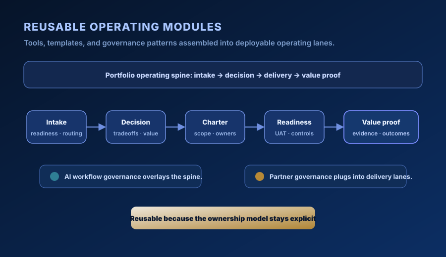

What I do
Operating problems I solve
I build and run the systems that connect strategy to delivery: intake, prioritization, decision cadence, delivery readiness, executive reporting, and follow-through.
The pattern comes from real operating environments at Microsoft, T-Mobile, Avalara, Doosan GridTech, and MISO Energy, under CIO, CFO, CTO, and COO sponsorship: multibillion-dollar platform exposure, portfolios of several hundred initiatives, nine-figure capital programs, and global partner ecosystems. Read the case studies.
Portfolio & Demand Governance
Structured intake, priority logic, and executive reporting that replace ad-hoc demand with a repeatable governance rhythm.
PMO Build & Operating Model
Stand up or restructure PMO functions with clear ownership, lightweight process, and operating cadence that scales.
AI Program Operations
Governance frameworks and delivery workflows for AI initiatives — from idea intake through artifact lifecycle management.
Program & Delivery Execution
Complex program delivery: charters, RAID logs, stage gates, stakeholder alignment, and executive-ready status reporting.
Operating Model Design
Cross-functional operating model work — roles, handoffs, decision rights, and rhythm design for maturing organizations.
Proof & Evidence Architecture
Structured evidence systems that turn portfolio outputs into auditable, employer-facing proof of impact.
Featured case studies
Outcomes with names attached
Each case study walks through the operating problem, the options on the table, the structure I put in place, and what changed.
65% faster delivery cycles
Portfolio signal reset across ~500 revenue technology initiatives — 340 to 120 days without re-platforming.
$1.8B in influenced renewals
Global planning-services platform governance: $700M–$1B in voucher liability, 6,000 to 37,500 annual engagements.
~$125M sequenced under constraint
Integrated software, construction, and security planning across three concurrent utility-scale storage deployments.
Operating routes
How problems move through my system
Each route is a documented end-to-end flow — from trigger to resolution — showing how I approach a class of operating problem.
Messy demand to executive review
Unstructured intake to governed pipeline — prioritized, sequenced, and ready for leadership decisions.
Tradeoffs to executive decision
Structured tradeoff analysis and escalation path that produces clear, defensible decisions.
AI idea to governed artifact
Full lifecycle from AI initiative intake through artifact governance and public-safe proof review.
Approved intent to chartered start
From approved initiative to fully chartered delivery — scope, RAID, stakeholders, and baseline locked.
Delivery readiness to value realization
Commissioning, hypercare, and value tracking — closing the loop from delivery to confirmed outcome.
Artifact to public-safe proof
Sanitization, evidence architecture, and employer-facing proof packaging for portfolio outputs.
Partner ecosystem governance
Qualification, readiness evidence, escalation paths, and follow-through for partner and external delivery networks.
Module library
Reusable operating modules
Structured, documented modules built from real program and portfolio work — each one a tool, template, or process pattern available to deploy.

Get in touch
Connect
Available for senior PMO, portfolio governance, AI program operations, and operating model engagements.
LinkedIn is the best contact channel — messages there get a response, and my full resume and work history are on the profile.